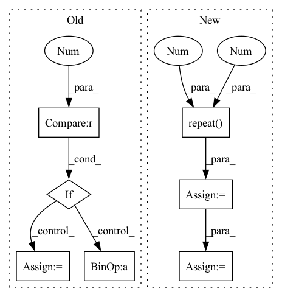

Pattern ID :1408

Before Change
score = F.log_softmax(y, dim=2)
// 因为是补齐了的，所以需要找到真正的 score
for i in range(score.shape[0]):
if i == 0:
true_scores = score[i][loc_len[i] - 1].reshape(1, -1)
else:
true_scores = torch.cat(
(true_scores, score[i][loc_len[i] - 1].reshape(1, -1)), 0)
return true_scores
After Change
origin_len = batch.get_origin_len("current_loc")
final_out_index = torch.tensor(origin_len) - 1
final_out_index = final_out_index.reshape(final_out_index.shape[0], 1, -1)
final_out_index = final_out_index.repeat(1, 1, 2*self.hidden_size).to(self.device)
out = torch.gather(out, 1, final_out_index).squeeze(1) // batch_size * (2*hidden_size)
out = self.dropout(out)
y = self.fc_final(out) // batch_size * loc_size
In pattern: SUPERPATTERN
Frequency: 4
Non-data size: 7
Instances
Fragment ID: 6588517
Project Name: libcity/bigscity-libcity
Commit Name: ec61c9cd984d1c86ee715380ed3b65b4222c8d1f
Time: 2021-05-06
Author: 33283819+WenMellors@users.noreply.github.com
File Name: trafficdl/model/trajectory_loc_prediction/DeepMove.py
M Class Name: DeepMove
N Class Name: DeepMove
M Method Name: forward(2)
N Method Name: forward(2)
M Parent Class: AbstractModel
N Parent Class: AbstractModel
M File Name: trafficdl/model/trajectory_loc_prediction/DeepMove.py
N File Name: trafficdl/model/trajectory_loc_prediction/DeepMove.py
M Start Line: 122
M End Line: 175
N Start Line: 152
N End Line: 163
'>
Before Change
// 因为是补齐了的，所以需要找到真正的 score
loc_len = batch.get_origin_len("current_loc")
for i in range(score.shape[0]):
if i == 0:
true_scores = score[i][loc_len[i] - 1].reshape(1, -1)
else:
true_scores = torch.cat(
(true_scores, score[i][loc_len[i] - 1].reshape(1, -1)), 0)
return true_scores
After Change
origin_len = batch.get_origin_len("current_loc")
final_out_index = torch.tensor(origin_len) - 1
final_out_index = final_out_index.reshape(final_out_index.shape[0], 1, -1)
final_out_index = final_out_index.repeat(1, 1, self.hidden_size).to(self.device)
out = torch.gather(out, 1, final_out_index).squeeze(1) // batch_size * hidden_size
out = F.selu(out)
out = self.dropout(out)
y = self.fc(out)
score = F.log_softmax(y, dim=1) // calculate loss by NLLoss
return score
def predict(self, batch):
'>
Fragment ID: 6588615
Project Name: libcity/bigscity-libcity
Commit Name: ec61c9cd984d1c86ee715380ed3b65b4222c8d1f
Time: 2021-05-06
Author: 33283819+WenMellors@users.noreply.github.com
File Name: trafficdl/model/trajectory_loc_prediction/RNN.py
M Class Name: RNN
N Class Name: RNN
M Method Name: forward(2)
N Method Name: forward(2)
M Parent Class: AbstractModel
N Parent Class: AbstractModel
M File Name: trafficdl/model/trajectory_loc_prediction/RNN.py
N File Name: trafficdl/model/trajectory_loc_prediction/RNN.py
M Start Line: 87
M End Line: 97
N Start Line: 84
N End Line: 94
'>
Before Change
// Pad attention mask to more divisible length
remainder = attention_mask.size(-1) % sequence_length_padding_divisor
if remainder != 0:
pad_length = sequence_length_padding_divisor - remainder
attention_mask = F.pad(
attention_mask,
// Want e.g. (..., 999) -> (..., 1000)
pad=(0, pad_length),
After Change
if attention_mask is not None:
// make sure padded tokens output 0
expand_attention_mask = attention_mask.unsqueeze(-1).repeat(1, 1, hidden_states.shape[2])
hidden_states[~expand_attention_mask] = 0
// extend attention_mask
attention_mask = (1.0 - attention_mask[:, None, None, :].to(dtype=hidden_states.dtype)) * -10000.0
attention_mask = attention_mask.expand(
attention_mask.shape[0], 1, attention_mask.shape[-1], attention_mask.shape[-1]
)
position_embeddings = self.pos_conv_embed(hidden_states)
hidden_states = hidden_states + position_embeddings
hidden_states = self.layer_norm(hidden_states)
hidden_states = self.dropout(hidden_states)
for layer in self.layers:
if output_hidden_states:
all_hidden_states = all_hidden_states + (hidden_states,)
layer_outputs = layer(hidden_states, attention_mask=attention_mask, output_attentions=output_attentions)
// add LayerDrop (see https://arxiv.org/abs/1909.11556 for description)
dropout_probability = torch.rand(tuple())
skip_the_layer = torch.tensor(self.training) and (dropout_probability < self.config.layerdrop)
if self.config.layerdrop > 0.0:
hidden_states = torch.where(skip_the_layer, hidden_states, layer_outputs[0])
else:
hidden_states = layer_outputs[0]
if skip_the_layer:
layer_outputs = (None, None)
if output_attentions:
all_self_attentions = all_self_attentions + (layer_outputs[1],)
if output_hidden_states:
all_hidden_states = all_hidden_states + (hidden_states,)
if not return_dict:
return tuple(v for v in [hidden_states, all_hidden_states, all_self_attentions] if v is not None)
'>
Fragment ID: 6588608
Project Name: huggingface/optimum-graphcore
Commit Name: 075200de7b5b118681fc46af97985bb53ce9c146
Time: 2022-08-03
Author: gejinchen1996@gmail.com
File Name: optimum/graphcore/models/wav2vec2/ipu_layer_drop.py
M Class Name: IPUWav2Vec2Encoder
N Class Name: IPUWav2Vec2Encoder
M Method Name: forward(6)
N Method Name: forward(6)
M Parent Class: Wav2Vec2Encoder
N Parent Class: Wav2Vec2Encoder
M File Name: optimum/graphcore/models/wav2vec2/ipu_layer_drop.py
N File Name: optimum/graphcore/models/wav2vec2/ipu_layer_drop.py
M Start Line: 41
M End Line: 108
N Start Line: 41
N End Line: 83
'>
Before Change
// Remove padded values
// Want e.g. (..., 1000, 768) -> (..., 999, 768)
if pad_length > 0:
hidden_states = hidden_states[..., 0:(-pad_length), :]
hidden_states = self.layer_norm(hidden_states)
After Change
if attention_mask is not None:
// make sure padded tokens are not attended to
expand_attention_mask = attention_mask.unsqueeze(-1).repeat(1, 1, hidden_states.shape[2])
hidden_states[~expand_attention_mask] = 0
// extend attention_mask
attention_mask = (1.0 - attention_mask[:, None, None, :].to(dtype=hidden_states.dtype)) * -10000.0
attention_mask = attention_mask.expand(
attention_mask.shape[0], 1, attention_mask.shape[-1], attention_mask.shape[-1]
)
position_embeddings = self.pos_conv_embed(hidden_states)
hidden_states = hidden_states + position_embeddings
hidden_states = self.dropout(hidden_states)
for layer in self.layers:
if output_hidden_states:
all_hidden_states = all_hidden_states + (hidden_states,)
layer_outputs = layer(hidden_states, attention_mask=attention_mask, output_attentions=output_attentions)
// add LayerDrop (see https://arxiv.org/abs/1909.11556 for description)
dropout_probability = torch.rand(tuple())
skip_the_layer = torch.tensor(self.training) and (dropout_probability < self.config.layerdrop)
if self.config.layerdrop > 0.0:
hidden_states = torch.where(skip_the_layer, hidden_states, layer_outputs[0])
else:
hidden_states = layer_outputs[0]
if skip_the_layer:
layer_outputs = (None, None)
if output_attentions:
all_self_attentions = all_self_attentions + (layer_outputs[1],)
hidden_states = self.layer_norm(hidden_states)
if output_hidden_states:
all_hidden_states = all_hidden_states + (hidden_states,)
if not return_dict:
return tuple(v for v in [hidden_states, all_hidden_states, all_self_attentions] if v is not None)
'>
Fragment ID: 6588642
Project Name: huggingface/optimum-graphcore
Commit Name: 075200de7b5b118681fc46af97985bb53ce9c146
Time: 2022-08-03
Author: gejinchen1996@gmail.com
File Name: optimum/graphcore/models/wav2vec2/ipu_layer_drop.py
M Class Name: IPUWav2Vec2EncoderStableLayerNorm
N Class Name: IPUWav2Vec2EncoderStableLayerNorm
M Method Name: forward(6)
N Method Name: forward(6)
M Parent Class: Wav2Vec2EncoderStableLayerNorm
N Parent Class: Wav2Vec2EncoderStableLayerNorm
M File Name: optimum/graphcore/models/wav2vec2/ipu_layer_drop.py
N File Name: optimum/graphcore/models/wav2vec2/ipu_layer_drop.py
M Start Line: 127
M End Line: 193
N Start Line: 101
N End Line: 144